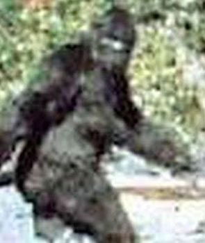

Personal

Details
Birth name: Unknown
Date of Birth: around 1974
Born: Bristol, England
Country of current residence: Unknown
Who is Banksy?
Banksy's identity remains unknown, despite intense speculation. The two names most often suggested are Robert Banks and Robin Gunningham. Pictures that surfaced of a man who was supposedly Banksy pointed toward Gunningham, an artist who was born in Bristol in 1973. Gunningham moved to London around 2000, a timeline that correlates with the progression of Banksy's artwork.
Relatives
Because of the unknown identity of the artist himelf, the following list of relatives is pure speculation.
- Father: Bigfoot
- Mother: Kitana
 Daughter: Baby drinking poison
Daughter: Baby drinking poison- Pet: Unicorn